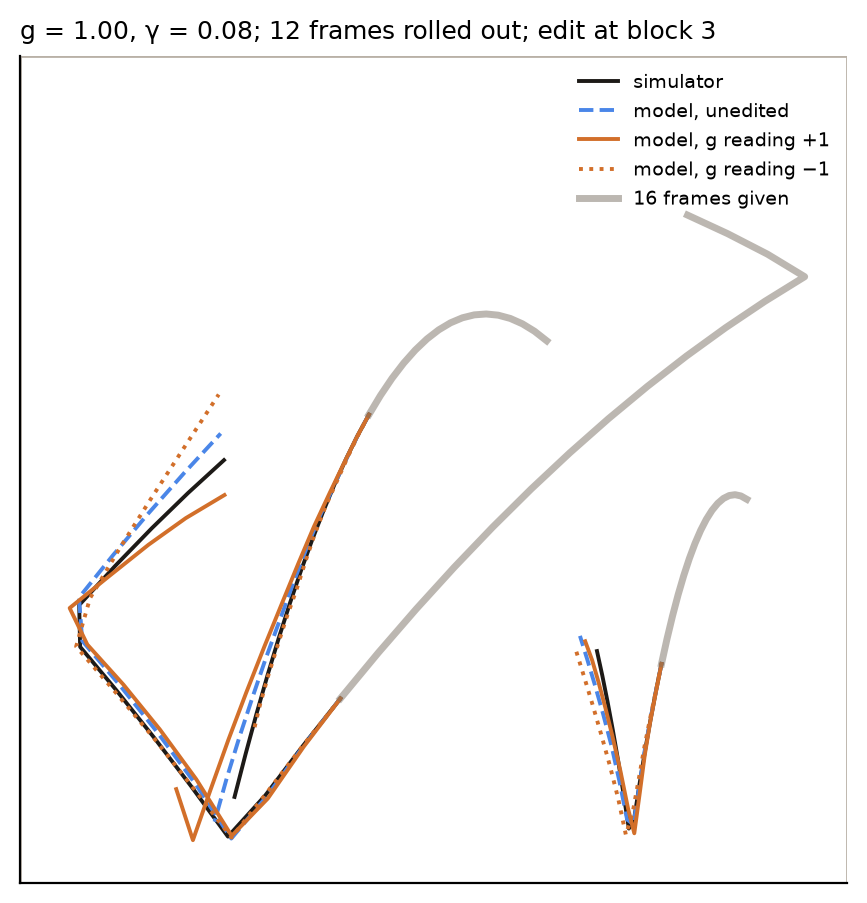
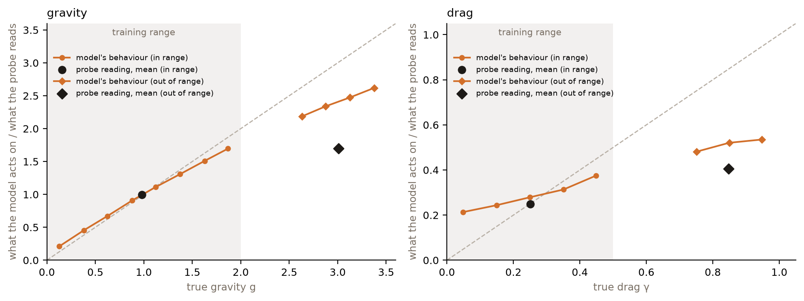
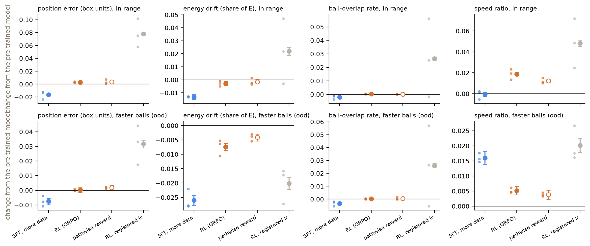
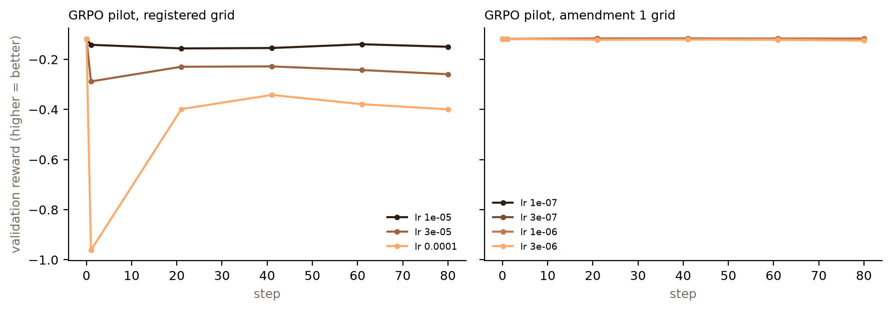

← Research·Experiments·
A tiny physics world model carries energy and collisions it barely uses, tracks gravity it can’t extrapolate, and gains less from RL than from more data
Six small transformers trained from scratch to predict where three bouncing balls go next, opened up three ways: is what a probe reads also what the model acts on; is a physical constant like gravity a readable, steerable variable that holds outside the training range; and what does RL for physical consistency change inside? Velocity is read and used; energy and “a collision is coming” are read almost perfectly and barely used; gravity is used well but only half readable and stops short past the training edge; and RL moved almost nothing that more simulator data did not move better.
results/exp_b_rollout_demo.npz, the episode of 8 whose rollout stays closest to the simulator). Drawn by make_cover.py.Summary: the short answer and the key results
In short
Does a small world model act on the physics a probe finds inside it, and does RL for physical consistency teach it more physics?
Only partly, and no. In a 0.8M-parameter transformer trained to predict three balls in a box, a linear probe reads velocity (R² 0.95), total energy (0.88) and “a collision happens before the next frame” (AUROC 0.90) at the last block. Adding the velocity direction at one frame moves the predicted next position the right way (cosine 0.97-0.99) but by only 42-48% of the physically correct amount; the same edit along energy or collision does nothing beyond random directions. Trained on worlds with gravity from 0 to 2, the model’s predictions imply the right gravity (correlation 0.98), while a linear probe reads it at only R² 0.45; at gravity 2.5-3.5 its behaviour reaches 2.4 and the probe stays at 1.7. RL on the model’s own rollouts with an energy-and-walls reward left its insides unchanged, cut energy drift by 0.3 points and made positions slightly worse; supervised training on more simulator data with the same compute improved every measure, including RL’s own reward.
Key results
| What we tested | Result | Compared with |
|---|---|---|
| Is velocity used, not just present (pre-registered)? | Used at blocks 1-3 in 3 of 3 models: a one-frame edit moves the prediction in the probe’s direction (cosine 0.99 at block 2) by 0.48 of the physical amount at block 2 and 0.42 at block 3 | 100 random directions of the same size: 95% band tops 0.12-0.19. Bar for “physically correct amount”: gain 0.8-1.2, not met |
| Are energy and collision-imminent used (pre-registered)? | Present but barely used: energy probe R² 0.88 (input baseline −0.00), collision AUROC 0.90 (input 0.50); at block 3 one-frame edits move the prediction by −0.006 of the energy asked for and remove 0.0% of the bounce | Random bands ±0.03 (energy) and ±0.0002 (bounce). Energy swapped in from another episode at every frame is used at blocks 1-2 (τ 0.53, 0.78), not at block 3 (τ −0.06) |
| Is gravity a readable, steerable variable (pre-registered)? | Used, half readable: the model’s predictions imply g with correlation 0.98; a probe reads it at R² 0.43-0.48 (bar 0.8, not met); swapping the probe direction from a donor moves behavioural g with τ 0.78-0.80 | Raw-input probe R² 0.14-0.18; random-direction τ tops 0.26-0.31. Additive dose: inside the random band in 2 of 3 models |
| Does it extrapolate past the training gravity and drag (pre-registered)? | Behaviour partly, the probe not: at true g ≈ 3.0 the model acts as if g were 2.35-2.47 (partial), the probe reads 1.66-1.74 (saturates); at drag ≈ 0.85, behaviour 0.49-0.55 and probe 0.40-0.41 (both saturate) | Training maxima 2.0 and 0.5. Still 14× better than constant velocity one step ahead at g ≈ 3 |
| Does RL for physical consistency beat more data (pre-registered, one amendment)? | No: RL (GRPO, energy + wall reward) changed energy drift by −0.3 points [−0.4, −0.1] and position error by +0.003 [+0.002, +0.004] (worse); supervised training on fresh simulator data, same compute: −1.3 points [−1.5, −1.1] and −0.016 [−0.018, −0.015] | On RL’s own reward, supervised training scored −0.104, RL −0.113, the pre-trained model −0.116. The registered learning rate broke the model (valid horizon 6.7 to 3.7 frames) |
| What did RL change inside? | Nothing measurable: every probe score within 0.001 of the pre-trained model’s, edit gains within 0.005. Supervised training raised velocity and collision probe scores in all 3 models (+0.003; +0.004 to +0.010), below the 0.01 bar | Reward check before training: a world where balls pass through each other scores as well as the truth (−0.0011 both) |
01Introduction
Show a tiny transformer 16 frames of three balls bouncing in a box under gravity, and it will draw the next frames: the arcs bend down, the balls bounce off the floor, and the paths stay close to the simulator’s for a dozen frames. Inside, a straight line through its activations reads the balls’ velocities almost perfectly and their total energy nearly as well. It is tempting to say the model “knows” the energy. But push its activations along that energy line at the last block and its next prediction does not speed up or slow down at all. The number is there, readable, and the model is not looking at it.
What is known. Sequence models trained on board games or physics form internal state that a probe can read (Othello-GPT’s board; Li et al., 2023). “Present but Barely Used” (BlackboxNLP 2026) showed a board representation that survives a change of training objective (probe accuracy 0.79 against 0.96) while interventions barely move behaviour (+0.02 against +0.21). WorldBench (2026) found that video world models produce plausible motion while missing the physical constants behind it. RL post-training is used to make generative world models more physically consistent, with rewards that check physics on the model’s own rollouts.
What is missing. Three questions are rarely tested on one model where the true physics is known exactly: whether each probed quantity is causally used, and by how much against what physics requires; whether a constant such as gravity is a variable inside the model and holds outside the training range; and what an RL physics reward actually changes inside, compared with simply training on more data.
In a world model trained from scratch on an exact simulator, is what a probe reads what the model uses; is a physical constant readable, steerable and extrapolated; and does RL for physical consistency teach more physics than more data?
What this note does. It trains six small world models from scratch on a laptop, three per world, and runs three pre-registered experiments on them. It contributes:
- a presence-against-use measurement for velocity, energy and collision-imminent, with a gain measured in physical units (1 = the prediction moves exactly as physics says) and random-direction controls;
- a physical-constant study: a behavioural readout of the model’s gravity and drag, linear probes, two kinds of steering, and tests beyond the training range;
- a negative RL result with its inside view: GRPO and a differentiable variant on an energy-and-walls reward, against supervised training with the same compute;
- a reward check showing the physics reward cannot tell the true world from one where balls pass through each other, and a pilot showing why the registered RL learning rate failed.
What counts as success. Written down before any probe or post-training run (pre-registration):
- Used: an edit along the probe direction moves the prediction more than the 97.5th percentile of 100 random directions of the same size, in all three models. Physically correct amount (velocity): gain 0.8 to 1.2 and cosine at least 0.9.
- Linearly readable constant: probe R² at least 0.8 on held-out episodes and 0.05 above a probe on the raw frames. Steerable: donor-swap τ above the random band and the largest additive dose outside its random band.
- Extrapolates: at gravity 2.5-3.5 the mean behavioural or probe reading is at least 2.5 (2.2 or less = saturates); at drag 0.7-1.0, at least 0.7 (0.55 or less = saturates).
- Improves (post-training): the paired difference from the pre-trained model excludes zero in the good direction and all three seeds agree. Shortcut: RL’s validation reward improves while a held-out physics check gets worse by the same rule.
02Setup
| Part | What it is | Size |
|---|---|---|
| Base world | Three equal balls (radius 0.05) in a unit box, elastic, no gravity or friction, simulated exactly by jumping from collision to collision; 64 frames 0.05 time units apart; kinetic energy 0.5-2.0 (faster balls, out of range: 2.5-3.5) | 20,000 training episodes; test 2,000; faster 1,000 |
| Constants world | The same box with gravity g (pulling down) and linear drag γ drawn per episode; 20 exact sub-steps per frame | g 0-2, γ 0-0.5 in training; out of range g 2.5-3.5 or γ 0.7-1.0 |
| World model | A GPT with one token per frame: 6 numbers in (3 balls × x, y), 6 out, predicting the next frame as xt + 0.05 × head(ht); 4 blocks, width 128; trained from scratch on next-frame error for 40 epochs | 803,078 parameters; 2-3 minutes per model on an Apple M5 Max |
| Seeds | Three models per world, differing in initialisation and batch order | 6 pre-trained, 12 post-trained |
Terms. A probe is a linear map from one block’s activations to a quantity, fitted on 1,000 training episodes and scored on held-out test episodes (R² for numbers, AUROC for yes/no). Presence is that score; the input baseline is the same probe on the raw positions of the last two frames, so presence above it means the model computed something. An edit adds a vector to one block’s output at one frame t and lets the rest of the model run; a donor swap replaces the component along the probe direction with another episode’s, at every frame (τ is the correlation between the change in the prediction and the true difference between the two episodes). The gain of an edit is the change in the prediction projected onto the change physics says should happen, divided by that change: an edit that raises a velocity reading by 0.25 should move the next position by 0.25 × 0.05. The bounce fraction is how much of the true deviation from straight-line flight a prediction contains (1 = the whole bounce). The behavioural gravity and drag are the values that best explain the accelerations implied by the model’s own predictions on frames with no contact (a least-squares fit that recovers the simulator’s constants to 2×10⁻⁵ on true trajectories).
For post-training: position error is the mean distance between rollout and simulator balls over 56 frames generated from 8 true ones; energy drift is the mean |KE − E|/E over those frames (KE from frame-to-frame differences; the true trajectory itself scores 0.042, because a bounce between frames shortens the step); the valid horizon counts frames until any ball is 0.05 off; ball overlap is the share of frames where two balls are closer than 2r − 0.01 (they should have bounced); the speed ratio is rollout speed over true speed (below 1 = damping).
03How the study was run
- Simulate 11 dataset splits from fixed seeds (the base world’s train, validation, test and faster-ball splits are the base 2D world-model project’s own), about one minute on the CPU.
- Pre-train six models (two worlds × three seeds), 40 epochs each, the base project’s recipe unchanged; 2-3 minutes each.
- Smoke-test every script on 2-epoch throwaway models (deleted, not analysed), and score the RL reward on true and degenerate trajectories.
- Write and commit the pre-registration before any probe, edit, steering, RL or supervised run.
- Experiment A on the three base models: probes at every block (62,000 training rows, 31,000 test rows), then 4 kinds of intervention at 4 blocks, each with 100 random directions (1,000 free-flight and 1,000 collision frames; 2,000 donor pairs).
- Experiment B on the three constants models: errors on 3 splits, behavioural constants, probes at every block, and steering at 4 blocks (1,000 donor pairs; 100 random directions for swaps, 50 for doses).
- Experiment C: the registered RL pilot (3 learning rates × 80 steps on validation windows); amendment 1 after it failed; a second pilot (4 rates × 80 steps, and 4 × 32 for the pathwise arm); 12 post-training runs (3 seeds × supervised, registered RL, amended RL, pathwise); evaluation on 3,000 held-out episodes; experiment A’s measurements on all 15 models (50 random directions, 500 frames).
- Exploratory follow-ups, labelled as such: edits at every frame instead of one, and a dose curve for the collision edit.
| Fixed before any trial | Changed after reading results |
|---|---|
| Worlds, splits, model, training recipe, seeds | Nothing |
| Every probe, edit, edit size, null and verdict rule in A and B | Added (exploratory): all-frame edits and the collision dose curve, after the one-frame edits showed nothing for energy where the donor swap did |
| The reward, policy noise, RL recipe, learning-rate grid {1e-5, 3e-5, 1e-4} and pilot rule; the supervised arm and compute matching; evaluation and held-out checks | Amendment 1 (written before any main RL run): the registered grid lowered the validation reward at every rate, so a lower grid {1e-7 … 3e-6} was piloted by the same rule; the registered arm still ran and is reported; a pathwise (differentiable) arm was added as exploratory |
Conditions: everything ran on one Apple M5 Max (PyTorch MPS), shared with other jobs; pre-training 2-3 minutes per model, RL 60-95 seconds per run, supervised training 100-200 seconds, experiment A about 8 minutes per model. No paid compute and no API calls: $0.
04Results
4.1 Velocity is used, in the right direction, at about half the physical strength
A probe reads velocity at R² 0.94 at block 2 and 0.95 at block 3, above the raw-input baseline of 0.92 in all three models. Adding the probe direction at one frame moves the predicted next position in the direction physics says (cosine 0.99 at block 2, 0.97-0.98 at block 3) by 0.48 of the physically correct amount at block 2 and 0.42 at block 3, far above random directions of the same size (95% band tops 0.12-0.17 and 0.14-0.19). The pre-registered verdict is “used” at blocks 1-3 in 3 of 3 models; “physically correct amount” is not met.
The edit is specific: the change in the other five coordinates is 6-8% of the change in the targeted one at blocks 2-3. At block 0 nothing happens (gain 0.003), and at block 1 the direction is right (cosine 0.91-0.95) but the gain is 0.13. Figure 1 shows presence and use block by block. Why half? The edit changes the velocity reading at frame t only, and the model can also attend to frames t − 1, t − 2 and earlier, which still carry the old positions. But editing every frame by the same amount (exploratory) gives the same gain at block 3 (0.42) and a lower one at block 2 (0.32), so the earlier frames are not where the missing half went: the velocity the probe reads is one the model relies on only partly.
![Three panels by block 0 to 3. Velocity: presence (black) rises from 0.74 to 0.95, above the input baseline at blocks 2 and 3; the one-frame edit's gain (orange) rises from 0 to 0.48 at block 2 and 0.42 at block 3, above the grey random band; the donor swap's tau (dashed) rises from 0.31 to 0.98. Energy: presence rises from 0.11 to 0.88 against an input baseline of 0; the one-frame edit stays at 0, inside the random band; the donor swap's tau rises to 0.78 at block 2 and drops to -0.06 at block 3; the all-frame edit reaches 0.15 at block 2. Collision next: AUROC 0.79 to 0.91 against 0.50; the edit removes 0 to 2% of the bounce, inside or at the random band.](figures/present_vs_used.png)
results/exp_a_s*.json and exp_a_extra.json.4.2 Energy and “a collision is coming” are read almost perfectly and barely used
Energy is readable at block 3 with R² 0.85-0.90, where the raw-input probe scores −0.003: the model computes it. A one-frame edit that moves the energy reading by ±0.5 (velocity directions removed) changes the kinetic energy implied by the prediction by −0.4% to −0.8% of that at block 3, inside the random band (±0.03), and inside it at every block. “A collision happens before the next frame” is readable at AUROC 0.89-0.91 (input 0.50); subtracting its direction until the probe’s verdict flips removes 0.0% of the predicted bounce at block 3 and 0.1-0.2% at block 2. Pre-registered verdicts: energy “present but unused” at every block for the one-frame edit; collision “used” at block 1 by the rule, with an effect of 1% of the bounce, and level with the edge of its random band at block 2 (0.1%).
Energy is not ignored everywhere. Swapping the energy component in from another episode at every frame moves the prediction’s energy toward the donor’s with τ 0.53 at block 1 and 0.78 at block 2, far above random (tops 0.12-0.15 and 0.18-0.22), and not at block 3 (τ −0.06, inside its band). This reproduces the base 2D world-model project’s finding on its own model: energy is computed and used mid-network and is a passenger by the last block, exactly where the probe reads it best. The two tests differ because the swap touches every frame: an edit at frame t alone is outvoted by the earlier frames, which carry the old energy. Editing every frame (exploratory) gives a gain of 0.14-0.17 at block 2, above random (tops 0.04-0.05): used, at about a sixth of the physical amount.
The collision edit is small by construction: flipping the probe’s verdict takes a vector 0.2-1% the length of the activation. Scaled 16 times (8-14% of the activation’s length, exploratory), it removes 12-18% of the bounce at block 1, above random in all three models; 2-5% at block 2, above random in one; and nothing at block 3. So the clean yes/no a probe reads at block 3 (AUROC 0.90) is not the signal the model bounces with; the bounce is computed elsewhere, or spread over directions a single probe does not capture.
Read the three quantities block by block:
Each row: presence (black, probe R² or AUROC) and use (orange, one-frame edit gain or share of the bounce removed, shown from 0) with the 95% band of 100 random directions (grey). Numbers in brackets: presence / use. Means of the 3 base models, from results/exp_a_s*.json.
4.3 Gravity is used precisely, read by a probe only half as well, and steered by swapping
Trained on worlds with gravity 0 to 2 and drag 0 to 0.5, the three constants models predict the next frame 19× better than constant velocity (one-step error 0.0034 against 0.065), and the gravity their predictions imply tracks the true one with correlation 0.975-0.978 (slope 0.82-0.85). A probe for g at the best block reads it at R² 0.43-0.48, above probes on the raw frames (0.13-0.17 on three frames, 0.14-0.18 on eight) but below the pre-registered 0.8: not “linearly readable”. Drag is harder for both: behavioural correlation 0.30-0.34, probe R² 0.45-0.49.
The gravity probe improves with context, from R² 0.37 at frame 16 to 0.53-0.54 by frame 56 (seed 2620), so the model’s estimate sharpens as it sees more of the episode, but much of what it uses for gravity is not on one linear direction. That is the reverse of energy: energy is linearly present and unused at the last block; gravity is used and only partly linearly present.
Swapping the gravity direction in from another episode (velocity directions removed) moves the model’s behavioural gravity toward the donor’s with τ 0.78, 0.78 and 0.80 at block 3, above random (tops 0.31, 0.26, 0.26): steerable by swap in 3 of 3 models. Adding the direction to raise the probe’s reading by 1 moves behavioural gravity by +0.40, +0.25 and +0.56, inside the band of random edits of that size in 2 of 3 models. The random band is wide because a vector large enough to move the probe by 1 is large against the activations at block 3. Drag behaves the same way at block 2 (τ 0.52-0.62 against tops 0.18-0.21; dose outside the random band in 2 of 3), with one caveat: drag edits also move behavioural gravity (|τ| 0.39-0.73 at blocks 2-3), because in the fit a change in vertical speed can be read as either. Figure 2 shows a steered rollout.

results/exp_b_rollout_demo.npz.4.4 Past the training range, behaviour bends partway and the probe stops
At true gravity 2.5-3.5 (mean 3.01), the models act as if gravity were 2.47, 2.35 and 2.38 (pre-registered verdict: partial extrapolation), while the probe reads 1.74, 1.69 and 1.66 (saturates, below the training maximum of 2.0). At drag 0.7-1.0 (mean 0.85), behaviour reaches 0.49-0.55 and the probe 0.40-0.41: both saturate.
Figure 3 shows the gap. Inside the training range behaviour and probe agree on average; outside it the behaviour keeps rising with the true gravity (from 2.2 at g ≈ 2.6 to 2.6 at g ≈ 3.4) while the probe stays below the training edge. A probe fitted only on in-range episodes need not extrapolate, but the model’s behaviour does partly, so the model computes something the probe direction does not follow. The models still predict well beyond the range: one-step error at g ≈ 3 is 0.014, 4× the in-range error and 14× better than constant velocity (0.19). Rollouts degrade faster (mean ball error 0.11 after 8 frames, against 0.05 in range).

results/exp_b_s*.json.4.5 RL for physical consistency barely moves the model; more simulator data does better on every measure, including RL’s reward
Against the pre-trained models, GRPO with the energy-and-walls reward (amended learning rate 3×10⁻⁷, 300 steps) changed energy drift by −0.28 points [−0.44, −0.13] in range and −0.74 [−0.87, −0.62] on faster balls, and position error by +0.0028 [+0.0016, +0.0040] box units in range (worse in all seeds) and +0.0002 [−0.0015, +0.0019] on faster balls. Supervised next-frame training on 20,000 fresh simulator episodes with the same compute changed energy drift by −1.31 [−1.50, −1.12] and −2.60 [−2.77, −2.43] points and position error by −0.016 [−0.018, −0.015] and −0.008 [−0.010, −0.006], all seeds agreeing.
By the pre-registered rules, supervised training improves both primary measures in and out of range; RL improves energy drift only, and because its validation reward rose (−0.119 to −0.117, −0.109 to −0.104, −0.103 to −0.101 by seed) while position error got worse, the pre-registration calls it a shortcut. It is a small one: RL sped the balls up (speed ratio 0.973 to 0.992; the pre-trained model loses 3% of the speed over a rollout) without placing them better, which brings the kinetic energy back toward its true value. The differentiable variant (exploratory) did the same, a little less: drift −0.15 points [−0.31, +0.01], position +0.0035 [+0.0021, +0.0048]. On RL’s own reward measured on test rollouts, supervised training scored −0.104, RL −0.113 and the pre-trained model −0.116. Ball overlap, which the reward cannot see, did not rise under RL (+0.0003 [−0.0000, +0.0007]); supervised training lowered it (−0.0020 [−0.0024, −0.0017]).

results/exp_c_eval.json.The registered RL failed. At the pre-registered learning rate (10⁻⁵, the best of the registered grid) RL made every measure worse: position error +0.078, valid horizon 6.7 to 3.7 frames, ball overlap +2.7 points, and balls faster than their true speed (ratio 1.02). The pilot had already shown it (Figure 5): validation reward fell at all three registered rates. A gradient check found the reward’s gradient correct and its useful region tiny: a step of size 10⁻⁴ along it improved the reward, 10⁻³ hurt and 10⁻² halved it, while Adam’s first step at 10⁻⁵ moves all 803,078 weights by about 10⁻⁵ each, a step of about 10⁻². A random step of that size did no harm. When a model feeds on its own predictions, small weight changes compound over 24 frames, so the safe step is far smaller than in ordinary training.

results/exp_c_pilot*.json.4.6 Inside, RL changed nothing a probe can see; supervised training sharpened a little
After RL, every probe score at every block is within 0.001 of the pre-trained model’s, the velocity edit gains within 0.005, and the energy swap τ within 0.008, in all three models; the pathwise arm likewise. Supervised training raised velocity R² at block 3 by 0.003 (all seeds) and collision AUROC at block 3 by 0.004-0.010, moved energy’s swap τ at block 3 from −0.05 to +0.13 (still inside its random band in 3 of 3), and raised the velocity edit gain at block 2 in 3 of 3 models (+0.001 to +0.095). None passes the pre-registered bar for “stronger” (0.01 in R² in every seed, or the width of the null band).
So the question “did RL teach physics or a shortcut?” has a plain answer here: at a learning rate where it did not break the model, RL changed the output a little (faster balls) and the representation not at all. The broken registered run did change the inside (velocity R² fell to 0.94 in one model, whose block-3 velocity edit gain fell from 0.42 to 0.15), but by damage, not by learning.
![Six small panels of inside measurements per arm, three dots per arm. Energy R² at block 3 sits at 0.85-0.90 for every arm. Velocity R² at block 3 is about 0.952 for pre-trained, RL and pathwise and 0.955 for supervised. Velocity edit gain at block 2 is 0.44-0.50 for all but supervised (up to 0.59). Energy swap tau at block 2 is 0.74-0.83 for all. Energy swap tau at block 3 is about -0.05 for pre-trained, RL and pathwise and 0.10-0.18 for supervised. Collision AUROC at block 3 is 0.89-0.90, and 0.90-0.91 for supervised.](figures/posttraining_inside.png)
results/exp_c_inside.json.4.7 The reward could not tell the truth from a world without ball-ball collisions
Scored before any training on 500 validation windows, the true trajectories earn −0.0011, a world where each ball ignores the others also earns −0.0011, the truth plus the policy’s own sampling noise −0.032, motion damped to 80% speed −0.359, and frozen balls −1.0. The reward punishes damping heavily, so the shortcut the study was set up to catch (slowing everything down to “conserve” energy) was never cheap, and RL did the opposite. It is blind to ball-ball collisions, which is why ball overlap was a held-out check. At the learning rate where RL worked it did not exploit that blind spot (overlap +0.03 points); at the registered rate overlap rose by 2.5 and 5.6 points in two of three models, alongside every other kind of damage.
4.8 Against what exists
| Exact ground truth | Use in physical units | Physical constants, out of range | RL against data, inside view | |
|---|---|---|---|---|
| Othello-GPT (Li et al., 2023) | ✓ (board) | ✗ (flip success) | ✗ | ✗ |
| Present but Barely Used (BlackboxNLP 2026) | ✓ (board) | ✗ (accuracy change) | ✗ | ✗ |
| WorldBench (2026) | ✗ (videos) | ✗ | ✓ (estimation) | ✗ |
| This note | ✓ (exact simulator) | ✓ (gain 1 = physically exact) | ✓ (behaviour and probe) | ✓ (tiny models) |
This note’s models are tiny and its worlds simple; the comparison is about what each study can measure, not about scale.
05Implications for AI safety
Three cautions carry over to larger models. First, a probe’s accuracy does not say whether the model relies on what it reads: energy and collision directions were read at 0.88-0.90 and did nothing when edited at the block where they read best, while a quantity the model plainly uses (gravity) was only half readable. Any monitor or steering method built on a probe needs an intervention test, ideally in the units of the task, against random directions. Second, a probe fitted on in-distribution data can saturate exactly where behaviour does not: here the model’s behaviour extrapolated partway past the training gravity while the probe stopped below the training edge, so a probe-based monitor would under-report the out-of-range case it is most needed for. Third, “RL made the model more physical” has to be checked against the cheapest alternative with the same compute and against held-out physics: here RL bought a small energy gain with worse positions and no inside change, while more data improved everything.
Recommendation: before trusting a probe as a window into what a model does, edit along it and measure the effect in the units of the task against random directions; and before crediting RL with teaching a capability, compare it with plain supervised training at equal compute and look inside both.
06What this does not show
- Tiny models, simple worlds. 0.8M parameters, three balls, two dimensions. Large video world models may represent and use physics differently; the methods carry over, the numbers do not.
- Linear probes and linear edits only. “Barely used” means barely used along these directions. The model may use energy or collision information that sits on other directions or is nonlinear; the gravity result shows how much a linear probe can miss.
- RL was small and gentle. 300 GRPO steps at a tiny learning rate (or 120 pathwise steps), one reward, no KL term, no schedule. A better-tuned setup (trust regions, longer training, per-frame credit) could do more; the registered setting did harm and the amended one did little. The amended grid was chosen after the registered one failed (amendment 1).
- The reward has a known blind spot (ball-ball collisions), reported before training, and its energy term uses frame differences, on which the true trajectory itself is not perfect (drift 0.042).
- Compute matching counts token passes (forward 1, backward 2) and ignores that RL’s rollouts are sequential; in wall-clock time here RL took 60-95 s and supervised training 100-200 s.
- The behavioural constants come from a least-squares fit of the model’s predicted accelerations; for drag, a small effect per frame, that fit is noisy (correlation 0.30-0.34 even in range), and the gravity and drag estimates are coupled.
- Three seeds per arm. Intervals resample episodes with seeds averaged, so they do not capture seed-to-seed variance beyond the three seeds shown.
07Reproduce it
Redraw every figure and print the numbers behind them from results/, with no training:
python experiments/world-model-physics/make_figures.py # figures 1-6 and the numbers they plot
python experiments/world-model-physics/make_cover.py # the cover and thumbnailRerun everything on a Mac with Apple silicon (about 2 hours, no paid compute): reproduce.sh --dry-run prints every command in order, from simulating the datasets to the inside measurements. Training on MPS is not bit-for-bit deterministic, so a rerun’s numbers differ in the third significant figure.
08What’s next
- Find where the bounce is computed: patch whole blocks and attention heads between colliding and non-colliding frames, rather than one probe direction.
- Fit nonlinear probes for gravity and check whether they extrapolate the way the behaviour does.
- Mix a few percent of out-of-range constants into training and test whether the probe’s saturation moves with the training edge.
- Give RL a fair second chance: a KL term to the pre-trained model, per-frame credit, and a reward that also checks momentum, then look inside again.
- Repeat the presence-against-use test on a small open video world model, with physics labels from its training simulator.
09Questions and answers
Does a world model use the physics a linear probe finds in it?
Partly. In a 0.8M-parameter transformer trained on a bouncing-ball simulator, velocity is used: editing the velocity probe direction moves the prediction the right way at 42-48% of the physical amount. Energy and “a collision is coming” are read at R² 0.88 and AUROC 0.90 at the last block, but editing them there changes nothing beyond random directions. Energy is used mid-network, where swapping it in from another episode moves the prediction (τ 0.78).
Can you read gravity out of a world model’s activations?
Only about half of it. The model’s predictions imply the right gravity (correlation 0.98 across episodes with gravity 0 to 2), but a linear probe reads it at R² 0.43-0.48. Swapping the probe direction in from another episode does steer the model’s gravity (τ 0.78-0.80).
Does a small world model extrapolate to stronger gravity than it was trained on?
Partway. Trained on gravity up to 2, at a true gravity of 3 its predictions behave as if gravity were 2.35-2.47, while the linear probe reads 1.66-1.74, below its training range. With drag, both stop near the training edge.
Does RL for physical consistency make a world model more physical?
Not here. GRPO on the model’s own rollouts with an energy-conservation and wall reward cut energy drift by 0.3 points and made position error slightly worse; supervised training on more simulator data with the same compute cut drift by 1.3 points and position error by 0.016, and even scored better on RL’s own reward. RL changed no probe or edit measurement.
Why did the pre-registered RL run fail?
Its learning rate (10⁻⁵, the best of the registered grid) was far too large for a model that feeds on its own predictions: a parameter step of 10⁻³ along the reward gradient already hurt, and Adam’s first step at 10⁻⁵ is about 10⁻². The model got worse on every measure; a learning rate about 30 times smaller, chosen by the same rule, did no harm.
AAppendix: data
PREREGISTRATION.md: the plan, committed before any probe or post-training run, and amendment 1.results/train_<world>_s<seed>.json: pre-training curves (train and validation next-frame loss per epoch, wall time).results/exp_a_s<seed>.json: one-step errors by frame kind;presence(probe R² and AUROC per site, input baselines);velocity_edit,energy_edit(gain, cosine, leak ratio, null band and maximum, edit norm per block);collision_edit(bounce fraction clean and edited, drop, null band, free-frame deviation);interchange(τ and null bands).results/exp_a_extra.json: all-frame edits and the collision dose curve (exploratory).results/exp_b_s<seed>.json: per split, one-step errors (model, constant velocity, constant acceleration; all, free and collision frames) and rollout errors; behavioural constants (correlation, slope, means, binned medians); probes (R² by site and by frame, raw-frame baselines, mean reading, slope, share above the training maximum); per block, steering (τ, cross τ, null band, dose curve, dose null band).results/exp_b_rollout_demo.npz: the rollouts in Figure 2.results/exp_c_reward_check.json: the reward on true and degenerate trajectories.exp_c_pilot.json,exp_c_pilot_amend_grpo.json,exp_c_pilot_amend_pathwise.json: pilot curves and chosen rates.exp_c_train_<arm>_s<seed>.json: training curves.exp_c_eval.json: every rollout metric per arm, split and seed, the true trajectories’ own values, compute costs, and paired differences from the pre-trained model with intervals.exp_c_inside.json: experiment A’s measurements on every post-trained model.- Datasets and checkpoints are not shipped;
reproduce.shregenerates them from the seeds incommon.py.part18/holds copies of the base 2D world-model project’s simulator, model and probing code.
How to cite
@misc{lie2026worldmodelphysics,
author = {Albert Lie},
title = {A tiny physics world model carries energy and collisions it barely uses, tracks gravity it can't extrapolate, and gains less from RL than from more data},
year = {2026},
month = nov,
note = {steerlab research note},
url = {https://albertlieyingadrian.github.io/steerlab/experiments/world-model-physics/report/}
}